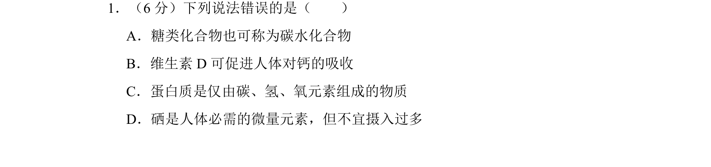
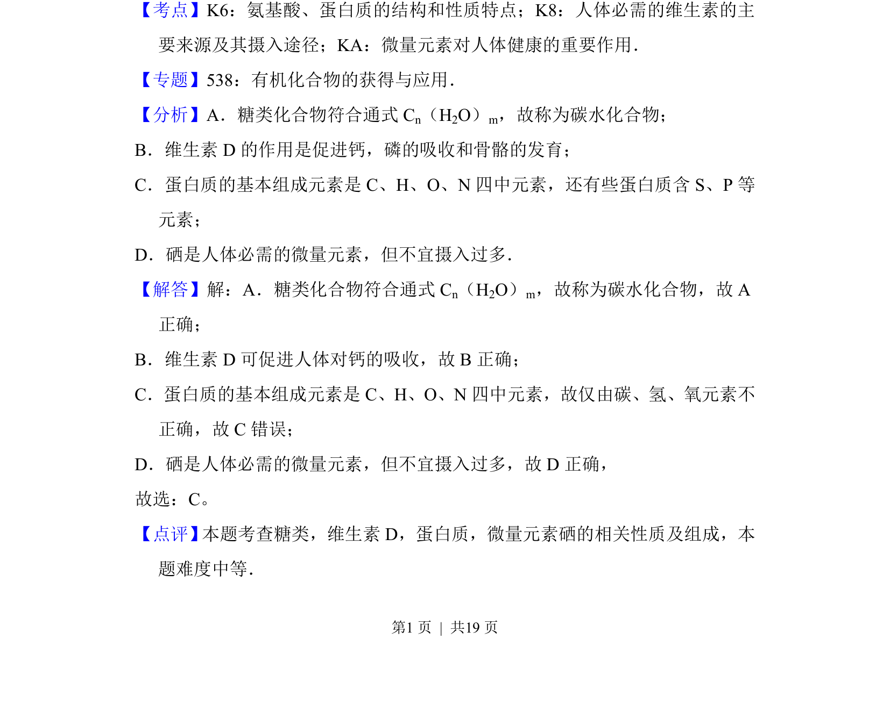
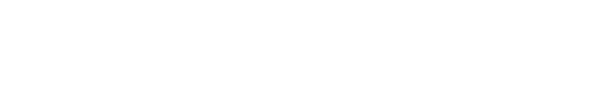

考点：糖类 维生素 蛋白质组成 微量元素
糖类
维生素
蛋白质组成
微量元素

本题考查糖类、维生素D、蛋白质的组成及微量元素硒的相关说法正误判断。


📄 原 PDF 第 1 页：素材/真题/吉林/2008-2024·（吉林）化学高考真题/2017年高考化学试卷（新课标Ⅱ）（解析卷）.pdf
素材/真题/吉林/2008-2024·（吉林）化学高考真题/2017年高考化学试卷（新课标Ⅱ）（解析卷）.pdf